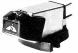
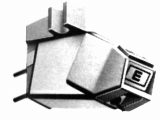

SONUS(ソナース）
アメリカのIM型カートリッジのブランド。ADCを設立したPritchard氏が、同社が買収された後、立ち上げたSonic Research社の製品らしい。その為か発電形式はIM型。代理店は今井商事。1970年代半ばに登場し、1980年代後半に消えた。
�T.カートリッジ

(Red Label)Green Label Red Label Biue Label

( Silver Series "E")Silver Series "E" Gold Series Blue Label